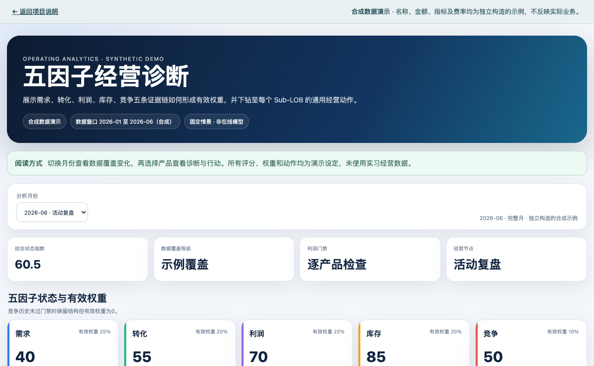

01 / OPERATING ANALYTICS
五因子经营诊断：
从分散指标到产品行动清单
把产品经营信息整理为需求、转化、利润、库存和竞争五条分析线索，再下钻到产品优先级与复核动作，供运营负责人判断下一步关注哪里。
业务问题
单一收入或销量指标难以解释经营变化。产品表现变动可能来自需求、转化效率、利润空间或库存状态；部分字段缺失时，综合评分还可能产生误导。
这项工作的重点，是把数据口径、指标覆盖和诊断依据放在同一页面，让负责人能够从整体状态进入产品层面的检查。
我完成的工作
- 组织指标与可用性检查
整理指标定义、计算口径与产品维度，区分可计算、缺失和需要补充的数据；避免将空值当作正常表现。
- 构建五因子诊断结构
把多个指标汇总到五个经营维度，结合覆盖状态与利润门禁生成产品优先级、复核依据及动作清单。
- 验证预测方法的适用范围
使用按时间推进的交叉验证比较 TimesFM 与 CatBoost。历史验证与线上经营成效分开表述，预测作为需要复核的辅助信息。
- 交付可筛选、可下钻的页面
让运营负责人按月份和产品查看状态、诊断依据与动作，并复制清单用于进一步讨论和跟进。
交互演示

本页面保留交互方式，所有评分、权重与产品均重新构造。演示不执行模型训练或在线预测；原项目的历史评估细节不在公开页面披露。
交付价值与边界
看板为运营负责人提供了一套从整体指标到产品动作的检查路径。它的价值在于统一分析入口、保留判断依据，以及让缺失信息和复核要求可见。
已确认的是工具交付与运营负责人使用；尚未确认具体建议采纳、工时节省或因果业务增量，因此不作相应量化承诺。